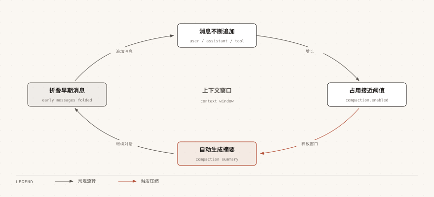

Pi Agent コンテキスト管理
コンテキスト管理はPi Agentを効率的に使用するための核となるスキルです。
この章では、環境ファイルを通じてAIの動作を制御する方法と、対話コンテキストを管理する方法について説明します。
コンテキストファイルの概要
Pi Agentは起動時にプロジェクト命令ファイルを自動的に読み込み、AIにプロジェクトの規約、コマンド、設定を認識させます。
これらのファイルはAIに「このプロジェクトでどのように作業すべきか」を指示します。
AGENTS.md / CLAUDE.md
これはPi Agentにとって最も重要なコンテキストファイルであり、読み込み順序は次のとおりです：
- ~/.pi/agent/AGENTS.md- グローバル命令。すべてのプロジェクトに適用されます
- 現在のディレクトリから上位の各親ディレクトリにあるAGENTS.mdまたはCLAUDE.mdを走査します
- 現在のディレクトリにあるAGENTS.mdまたはCLAUDE.md
以下はプロジェクトのルートディレクトリに置くAGENTS.md完全な例です：
例
## コード規約
- すべてのコードはTypeScriptの厳格モードを使用
- 関数には戻り値の型アノテーションが必須
- ESLintとPrettierを使用してコードスタイルを統一
## ワークフロー
- コード変更後は `npm run check` を実行して検証
- コミット前に `npm test` を実行してテストが通ることを確認
- 本番環境のデータベースマイグレーションをローカルで直接実行しない
## セキュリティ上の注意
- APIキーやパスワードをコードに書き込まない
- 機密設定は環境変数を使用
## 応答スタイル
- 応答は簡潔に保ち、明白なコードを過度に説明しない
- 問題が発生した場合は、まず修正案を示し、その後に原因を説明する
AGENTS.mdを更新した後、/reloadコマンドでホットリロードでき、Pi Agentを再起動する必要はありません。
AGENTS.mdとCLAUDE.mdの両方がある場合、Pi AgentはAGENTS.mdを優先して読み込みます。
以前Claude Codeを使用していた場合、既存のCLAUDE.mdをそのまま再利用できます。
ディレクトリ内にAGENTS.override.mdが存在する場合、そのディレクトリのAGENTS.mdとCLAUDE.mdの代わりに読み込まれます。
コンテキストファイルの読み込みを無効にするには、コマンドライン引数を使用します：
$ pi --no-context-files $ pi -nc # 短形式
SYSTEM.md
SYSTEM.mdはPi Agentのデフォルトシステムプロンプトを完全に置き換えるために使用し、内容を追記したいだけの場合はAPPEND_SYSTEM.mdを使用します。
どちらもグローバルとプロジェクトの2つのレベルに分かれており、パスと役割は次のとおりです：
| ファイル | レベル | 役割 |
|---|---|---|
| ~/.pi/agent/SYSTEM.md | グローバル | デフォルトシステムプロンプトを置き換え |
| プロジェクトルート/.pi/SYSTEM.md | プロジェクト | デフォルトシステムプロンプトを置き換え |
| ~/.pi/agent/APPEND_SYSTEM.md | グローバル | デフォルトシステムプロンプトの後に追記 |
| プロジェクトルート/.pi/APPEND_SYSTEM.md | プロジェクト | デフォルトシステムプロンプトの後に追記 |
ほとんどの場合、システムプロンプトを変更する必要はありません。
AGENTS.mdで大部分のカスタマイズ要件をカバーできます。
SYSTEM.mdはAIの動作を深くカスタマイズする必要があるシナリオに適しています。不適切な変更はAIの作業効率に影響を与える可能性があります。
コンテキスト圧縮（Compaction）
対話が長くなると、AIのコンテキストウィンドウ（context window）が徐々に埋まっていきます。
Pi Agentはコンテキスト圧縮（Compaction）でこの問題を解決します。自動的に古い対話内容を短い要約にまとめ、コンテキスト領域を解放します。

自動圧縮
デフォルトでは、Pi Agentはコンテキストがモデルの制限に近づくと自動的に圧縮をトリガーします。
圧縮動作は~/.pi/agent/settings.json内のcompaction設定で制御されます：
例
"compaction": {
"enabled": true,
"reserveTokens": 16384,
"keepRecentTokens": 20000
}
}
| 設定項目 | 型 | デフォルト値 | 説明 |
|---|---|---|---|
| compaction.enabled | boolean | true | 自動圧縮を有効にするかどうか |
| compaction.reserveTokens | number | 16384 | LLM応答用に確保するトークン数 |
| compaction.keepRecentTokens | number | 20000 | 圧縮せずに保持する最近のトークン数 |
トリガー条件は、コンテキストトークンがcontextWindowからreserveTokensを差し引いた利用可能領域を超えた場合です。
チェックのタイミングは、各ツールの実行完了後、次のユーザープロンプトが送信される前です。
手動圧縮
手動でいつでも圧縮をトリガーすることもできます：
/compact
圧縮時にカスタム指示を追加して、要約時にAIが注目すべき内容を指定できます：
/compact 重点关注错误修复和 API 变更
圧縮は現在の対話コンテキストに対してのみ不可逆です。
圧縮された元のメッセージはセッションファイルに完全に保持されているため、/treeで圧縮前のノードに戻れば詳細を確認できます。
圧縮前に完全なバックアップを残したい場合は、/cloneの使用をお勧めします。
/cloneは現在のアクティブブランチを新規セッションファイルに完全にコピーするため、圧縮前のバックアップに適しています。
/forkは特定の過去のユーザーメッセージから計算を開始し、それ以降の内容は新しいセッションに引き継がれません。
推論プロセスの表示
推論出力をサポートするモデルは、回答前に思考を行います。
以下の設定で推論プロセスの表示を制御できます：
| 設定 | 型 | デフォルト値 | 説明 |
|---|---|---|---|
| hideThinkingBlock | boolean | false | 推論プロセスを非表示にし、最終回答のみを表示 |
| showCacheMissNotices | boolean | false | キャッシュミス通知を表示し、圧縮とブランチ要約によるトークン使用量の通知も表示 |
使用Ctrl+Tを使うと、対話中にいつでも推論プロセスの表示/非表示を切り替えられます。
ホットリロード（/reload）
設定変更後に再起動が必要かどうかは、変更内容によって異なります。
以下の表に一般的な変更の反映方法をまとめています。「いいえ」とマークされた項目は/reloadを実行するだけで反映されます：
| 変更内容 | 再起動が必要か | 説明 |
|---|---|---|
| AGENTS.mdまたはCLAUDE.md（コンテキストファイル） | 否 | /reload実行後すぐに再読み込み |
| Extensions（拡張機能） | 否 | /reload実行後すぐに再読み込み |
| Skills（スキル） | 否 | /reload実行後すぐに再読み込み |
| プロンプトテンプレート | 否 | /reload実行後すぐに再読み込み |
| テーマファイル | 否 | /reload実行後すぐに再読み込み |
| キーボードショートカット設定 | 否 | /reload実行後すぐに再読み込み |
| ~/.pi/agent/settings.json 内の一部の設定 | である | 一部の設定は起動時に1回だけ読み込まれます |
| 新しくインストールした拡張パッケージ | である | パッケージの依存関係は起動時に解決されます |
| auth.json の認証情報 | である | 認証情報は起動時に読み込まれます |
コンテキスト使用量の確認
下部のステータスバーに現在のコンテキストのトークン使用量と費用がリアルタイムで表示されます。
使用/sessionコマンドでより詳細な情報を確認できます：
/session
出力例：
Session file: ~/.pi/agent/sessions/--Users-runoob-projects-runoob-demo--/2026-08-30T09-15-04-000Z_019fbb5d-7a2e-7f31-b5c4-1a2b3c4d5e6f.jsonl Session ID: abc123-def456 Messages: 42 Tokens: 85,432 Cost: $0.52 Current model: claude-sonnet-4-20250514その他の拡張機能